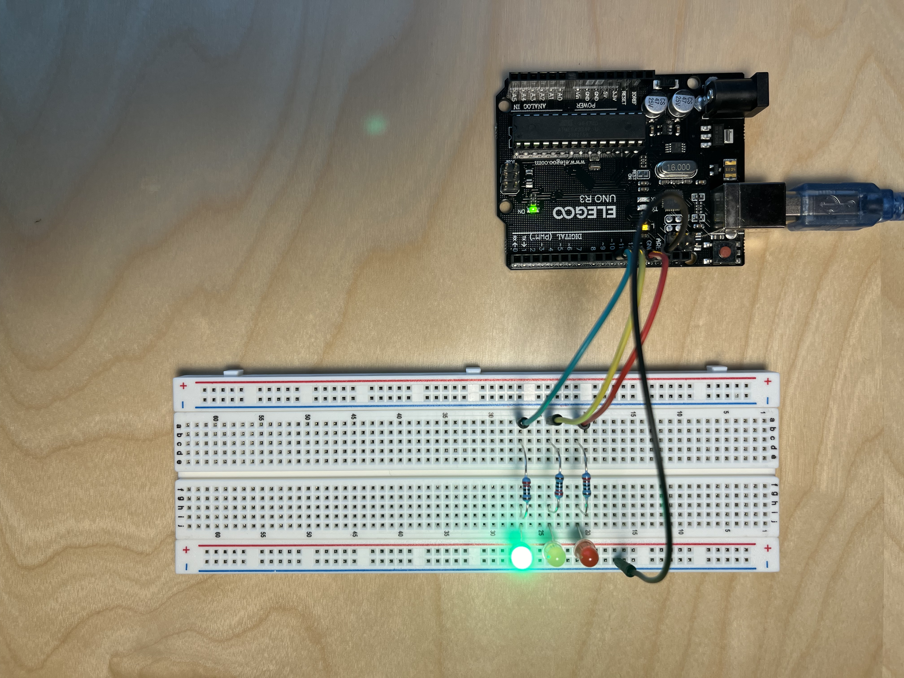
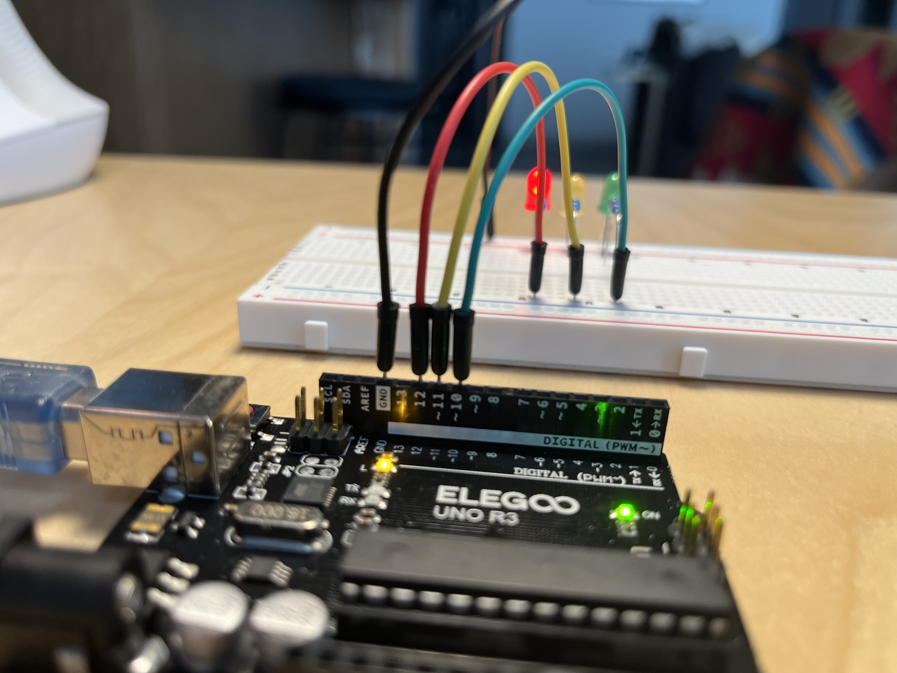
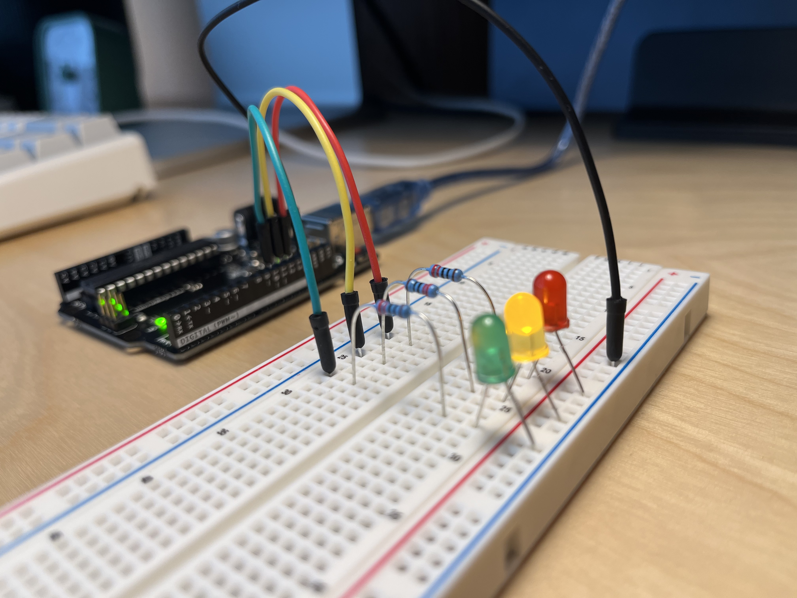
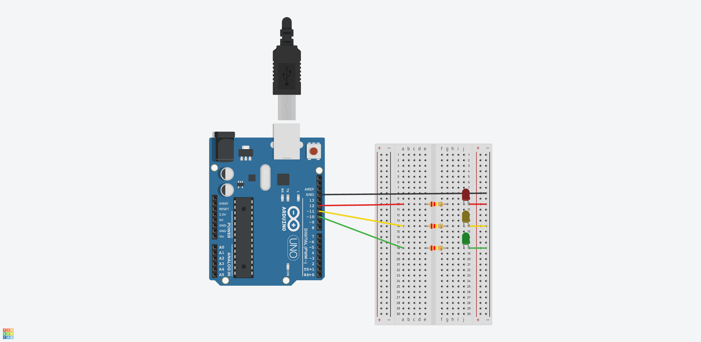

1: Traffic Lights
Source files
Documentation
Top down view of breadboard and Arduino 
Jumper wires connected to ground, digital pins 10 through 12 
Sequence of three closed circuits, one for each traffic light 
Helpful Pinout diagram

Circuit view 
Process
- I went to Arduino's documentation to get a better view of the pinout diagram because I wanted to know how to reference a particular pin in the code. I didn't find anything quick so I asked Claude.ai "How do you refrence a specific pin on an Arduino board in your code"
- Their breakdown was helpful:
- Digital pins uses the pin number directly (e.g.
13) - Analog pins has an
Aprefix - Built-in LEDs uses
LED_BUILTIN
- Digital pins uses the pin number directly (e.g.
- For future reference, here's their language documentation
- I duplicated the example Blink file but added three variables, one for each light
- For the breadboard, I referenced the PDF in the class syllabus, I liked how orderly they had lined all the circuits
- I adjusted the timing and removed the delays
- Did the schematic and circuit view documentation last, I'm guessing as projects get more complicated it might be good to plan it out in Tinkercad first